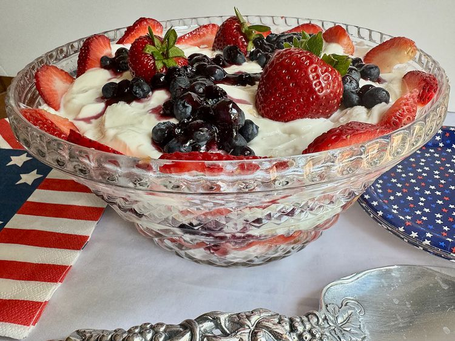

Easy Red, White, and Blue Trifle

I call this easy red, white, and blue trifle an “assembly recipe,” because very little cooking is involved. Fresh fruit, yogurt, and berry syrup are layered in a clear bowl for a beautiful presentation. Layer in as much fruit as your bowl will hold, for a refreshing and easy summer dessert.
Ingredients
- 1 purchased angel food cake, cut into bite-sized pieces, divided
- 32 ounces sweetened vanilla yogurt, divided
- 1 pint strawberries, hulled and sliced, or more for a larger bowl, divided
- 3/4 cup strawberry preserves
- 1 to 2 tablespoons water, or more as needed
- 2 cups blueberries, rinsed and dried
- 3/4 cup blueberry preserves
- whole strawberries and blueberries for garnish (optional)
Steps
- Place a layer of angel food cake pieces in the bottom of a small trifle dish or pretty cut glass bowl. Spread a thin layer of yogurt over cake layer.
- Add a single layer of sliced strawberries. Place strawberry preserves and 1 tablespoon water in a microwave-safe bowl and heat on High until preserves liquefy, 1 to 2 minutes. Stir, and add up to 1 tablespoon more water if needed to make a syrup. Drizzle a portion of strawberry syrup over strawberry layer.
- Add another single layer of cake pieces, and spread with yogurt. Sprinkle with blueberries.
- Place blueberry preserves and 1 tablespoon water in a microwave-safe bowl and heat on High until preserves have melted, about 1 minute. Stir, and add up to 1 tablespoon more water if needed to make a syrup. Drizzle a portion of blueberry syrup over blueberries.
- Add another layer of cake pieces; spread with yogurt, add a layer of strawberries, and drizzle with strawberry syrup. Add a layer of cake; spread with yogurt, sprinkle with blueberries, and drizzle with blueberry syrup. Spread with a final layer of yogurt.
- Garnish with fresh strawberry slices, whole berries, and blueberries, and drizzle with any remaining syrup.
- Cover and refrigerate until ready to serve. Store leftovers, covered, in the refrigerator.